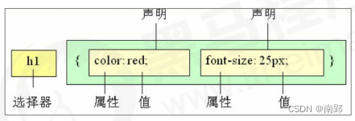

一、CSS 简介
1. CSS 和 HTML
HTML 是网友的骨架，只关注内容的语义。例如`<h1>`表示大标题，`<p>`表示段落。
早期的时候，HTML 只能做一些简单的样式，网页非常丑，而且使 HTML 代码臃肿。CSS 是 层叠样式表（Cascading Style Sheets）的简称。它也是一种标记语言。
CSS 主要用于设置 HTML 页面中的文本内容（字体、大小、对齐方式）、图片的外形（宽高、边框样式、边距等）以及版面的布局和外观显示样式。CSS 最大价值: 由 HTML 专注去做结构呈现，样式交给 CSS，即结构 ( HTML ) 与样式( CSS ) 相分离。
2. CSS 语法规范
CSS 规则由两个部分组成：选择器和一条或多条声明。

- 选择器是用于指定 CSS 样式的 HTML 标签，花括号内是对该对象设置的具体样式
- 属性和属性值以
键值对的形式出现 - 属性是对指定的对象设置的样式属性，例如字体大小、文本颜色等
- 属性和属性值之间用英文
:分开 - 多个“键值对”之间用英文
;进行区分
所有的样式，都包含在<style>标签内，表示是样式表。
<style>
p {
color: red;
font-size: 12px;
}
</style>3. CSS 代码风格
以下代码书写风格不是强制规范,而是符合实际开发书写方式。
- 展开格式（分行）
h3 { color: pink; font-size: 20px; } - 空格规范（选择器和大括号中间保留空格；冒号后面保留一个空格）
h3 { color: pink; } - 样式选择器，属性名，属性关键字全部小写
5. emmet 语法
5.1 快速生成 HTML 结构语法
- 生成标签：直接输入标签名，按tab键即可。如：div 然后tab 键， 就可以生成
<div></div> - 生成多个相同标签：加上
*。如：div*3可以快速生成3个<div></div> - 生成父子级关系的标签：用
>。如：ul>li - 生成兄弟关系的标签：用
+。 如：div+p - 生成带有类名或者id名字的标签： 直接写
.demo或者#two，再按 tab 键 - 生成的标签名称/内容按1、2…顺序：用 自增符号
$ - 在生成的标签内部写内容：用
{}表示
5.2 快速生成 CSS 样式语法
CSS 基本采取简写形式即可。
- 比如 w200 按 tab 可以生成 width: 200px。
- 比如 lh26px 按 tab 可以生成 line-height: 26px。
二、CSS 基础选择器
选择器就是根据不同需求把不同标签选择出来。简单来说，就是用于选择标签的。
选择器分为基础选择器和复合选择器两大类。
- 基础选择器由单个选择器组成
- 基础选择器包括：标签选择器、类选择器、id 选择器和通配符选择器
1. 标签选择器
直接用 HTML 标签名作为选择器，按标签名称分类，为页面某一类标签指定统一的 CSS 样式。
语法
标签名 {
属性1： 属性值1;
属性2： 属性值2;
属性3： 属性值3;
}优点：标签选择器可以把某一标签全部选择出来，快速为同类型标签设置统一样式。
缺点：不能设置差异化样式，只能选择全部当前标签。
2. 类选择器
差异化选择不同标签，单独选一个或者某几个标签。
语法
类选择器在 HTML 中以 class 属性表示，在 CSS 中，类选择器以一个 . 号显示。
.类名 {
属性1: 属性值1;
...
}<div class="类名"> </div>记忆口诀：
样式点定义，结构类调用。一个或多个，开发最常用。
注意
- 类选择器用
.标识，后面紧跟类名。 - 类名小写，长名称或词组使用
-连接单词。不要用纯数字、中文。 - 命名要有意义。
2.1 多类名
简单来说，就是一个标签有多个名字。
使用场景：
- 一些标签元素具有相同的样式(共同的部分)，多类名可以把他们放到一个类里面。
- 这些标签都可以调用这个公共的类,然后再调用自己独有的类。
- 从而节省CSS代码,统一修改也非常方便。
<style> .box { width: 150px; height: 100px; } .red { background-color: red; } .green { background-color: green; } </style> <body> <div class="box red">红色</div> <div class="box green">绿色</div> </body>
语法
在标签class中书写多个类名，类名间用空格分开
<p class="class-name1 class-name2"></p>3. id选择器
id 选择器可以为标有特定 id 的 HTML 元素指定特定的样式。
语法
HTML 元素以 id 属性来设置 id 选择器，用 # 来定义。
#id名 {
属性1: 属性值1;
...
}
<div id="id名"> </div>记忆口诀：
样式 # 定义，结构 id 调用，别人切勿使用。
id 选择器与类选择器的区别
- class 类选择器好比名字，一个人可以有多个名字，同时一个名字也可以被多个人使用。（一对多，多对一）
- id 选择器好比身份证号码，每个人对应唯一的一个号码，不得重复。（一一配对）
- 类选择器在修改样式中用的最多，id 选择器一般用于页面唯一性的元素上，经常和 JavaScript 搭配使用。
4. 通配符选择器
在 CSS 中，通配符选择器使用 * 定义，它表示选取页面中所有元素（标签）。
* {
属性1: 属性值1;
...
}特殊情况（常见）使用：
* {
margin: 0;
padding: 0;
}5. 基础选择器总结
| 基础选择器 | 作用 | 特点 | 使用情况 | 用法 |
|---|---|---|---|---|
| 标签选择器 | 选中所有相同标签 | 不能差异化选择 | 较多 | p{color:red;} |
| 类选择器 | 选出一个或多个标签 | 可以根据需求选择 | 最多 | .nav {color: red;} |
| id选择器 | 一次只能选中一个标签 | 一一配对 | 一般配合js使用 | #nav {color: red;} |
| 通配符选择器 | 选择所有标签元素 | 选择的太多，有部分不需要 | 特殊情况使用 | * {color: red; } |
三、CSS 复合选择器
复合选择器是建立在基础选择器之上，对基本选择器进行组合形成的。
常用的复合选择器包括：后代选择器、子选择器、并集选择器、伪类选择器等等
1. 后代选择器（重要）
后代选择器又称为包含选择器，可以选择父元素里的子元素。写法是将外层标签写在前面，内层标签写在后面，中间空格分开。
语法
元素1 元素2 { 样式声明; }- 上述语法表示选择元素1里面的所有元素2（后代元素）。
- 元素2可以是儿子，也可以是孙子等，只要是元素1的后代即可。
- 元素1 是父级，元素2 是子级，最终选择的是元素2
2. 子选择器（重要）
子元素选择器（子选择器）只能选择作为元素作为元素的最近一级子元素。简单理解就是选亲儿子。
语法
元素1 > 元素2 { 样式声明; }- 上述语法表示选择元素1里面的所有直接后代（子元素）元素2。
- 元素2必须是亲儿子，其孙子、重孙之类都不归他管。
- 元素1是父级，元素2是子级，最终选择的是元素2
3. 并集选择器（重要）
并集选择器可以选择多组标签，同时为他们定义相同的样式。通常用于集体声明。
并集选择器是各选择器通过英文逗号 , 连接而成，任何形式的选择器都可以作为并集选择器的一部分。
语法
元素1, 元素2 { 样式声明; }4. 伪类选择器（重要）
伪类选择器用于向某些选择器添加特殊的效果。
伪类选择器书写最大特点是用冒号 : 表示。
伪类选择器种类多，比如链接伪类选择器、结构选择器等。
4.1 链接伪类选择器
a:link /*选择所有未被访问的链接*/
a:visited /*选择所有已被访问的链接*/
a:hover /*选择鼠标指针位于其上的链接*/
a:active /*选择活动链接（鼠标按下未弹起的链接）*/注意事项
- 确保样式生效，要按照 LVHA 的顺序声明：link,visited,hover, active。
- a 链接在浏览器中有默认样式，所以实际开发都需要给链接单独指定样式。
4.2 focus 伪类选择器
:focus 伪类选择器用于获取焦点的表单元素。
焦点就是光标，一般情况 <input> 类表单元素才能获取，因此这个选择器也主要针对表单元素来说。
input:focus {
background-color: yellow;
}4.3 其他标准伪类选择器
1.first-child、last-child、nth-child(n)
:first-child表示父元素的第一个子元素。:last-child表示父元素的最后一个子元素。:nth-child(an+b)首先找到所有当前元素的兄弟元素，然后按照位置先后顺序从 1 开始排序，选择的结果为 CSS 伪类:nth-child括号中表达式(an+b)匹配到的元素集合(n=0，1，2，3...)
:not(p):not()用来匹配不符合一组选择器的元素。由于它的作用是防止特定的元素被选中，它也被称为反选伪类（negation pseudo-class）。::after (:after)::after用来创建一个伪元素，作为已选中元素的最后一个子元素。通常会配合content属性（必有该字段）来为该元素添加装饰内容。这个虚拟元素默认是行内元素。
.sad::after {
·content: "";
background-color: green;
}::before (:before)::before用来创建一个伪元素，作为已选中元素的第一个子元素。通常会配合content属性（必有该字段）来为该元素添加装饰内容。这个虚拟元素默认是行内元素。 使用::before伪元素的一个简单示例就是用于加入引号。
<q>一些引用</q>, 他说, <q>比没有好。</q>.
q::before {
content: "«";
color: blue;
}
q::after {
content: "»";
color: red;
}5. 复合选择器总结
| 选择器 | 作用 | 特征 | 使用情况 | 隔开符号及用法 |
|---|---|---|---|---|
| 后代选择器 | 用来选择后代元素 | 可以是子孙后代 | 较多 | 符号是空格 .nav a |
| 子选择器 | 选择最近一级元素 | 只能选亲儿子 | 较少 | 符号是大于 .nav>p |
| 并集选择器 | 选择某些相同样式的元素 | 可以用于集体声明 | 较多 | 符号是逗号，.nav, a |
| 链接伪类选择器 | 选择不同状态的链接 | 跟链接相关 | 较多 | 重点记住a{}和a:hover{} |
| focus选择器 | 选择获得光标的表单 | 跟表单相关 | 较少 | 记住input:focus用法 |